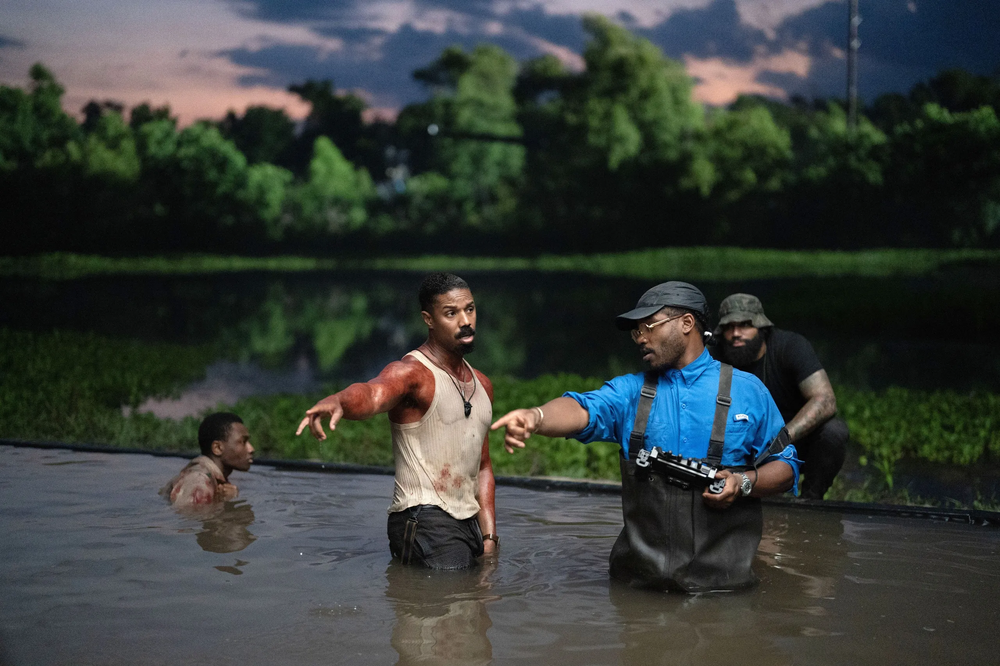
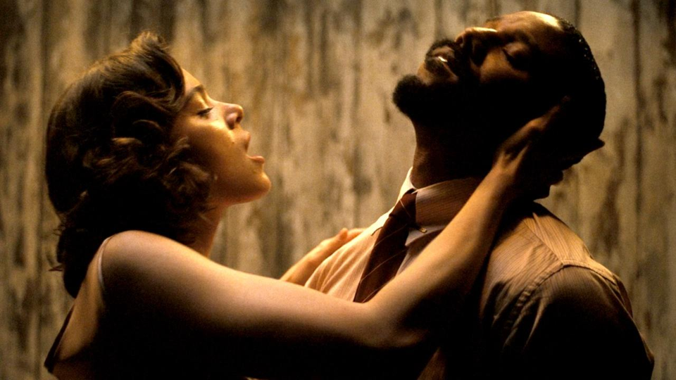
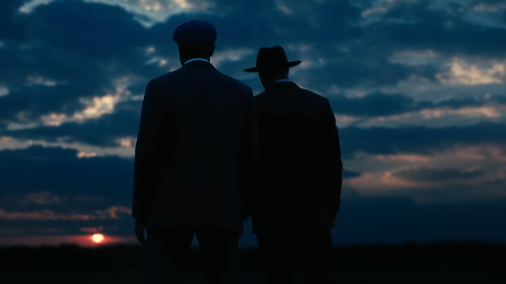

Trying to leave their troubled lives behind, twin brothers Smoke and Stack return to their Mississippi hometown to start up a juke joint. They reunite with their community including their younger cousin Sammie who's a burgoning musician and each twin's traumatic romantic pasts. The night starts off well, and even becomes transcendent, but quickly turns into a fight for everyone's lives as a group of vampires crash the party and come to turn everyone in the juke joint.
Before Sinners came out, Ryan Coogler said he wanted the film to "feel like a full meal". Despite the fact that Coogler has been making feature films for over a decade, this is his first fully original piece. A horror blockbuster musical with elements of action and romance. He certainly meant it when he said it. Sinners is a movie completely unlike any I've ever seen, and I mean that in the most positive way possible. $90 million has been used to give us a film that starts out like a slowburn crime drama, thne leads into a massive vampire blockbuster (utilizing the trope in some of the most creative ways I've seen in years). Don't forget multiple of the best musical numbers I've seen in years. Miles Canton's debut as Sammie is absolutely electric, he has a voice that you feel deep in your heart. This is a movie made for everyone, entertaining enough for the blockbuster crowd, smart enough if you want to dig deeper, but it also feels so singular and auethentic to a time and place. The world of the 1930s Mississippi Delta feels truly lived in. The movie's start is slow to action, but never once boring. It gives us a reason to care about these characters once it starts to hit the fan.
The cast has no weak link. Michael B Jordan plays identical twin brothers and I kept forgetting there weren't actually 2 of him walking around. The subtle character choices between them go the distance. Hailee Steinfeld is extremely memorable here, Miles Canton who I touched on earlier has an extremely impressive debut performance, Delroy Lindo doesn't even feel like I'm watching a performance. That is a man they brought here with time travel. He is consistently one of the most underappreciated actors working. Wunmi Mosaku brings the heart to this film, Jayme Lawson has some of my favorite scenes in the movie, Omar Benson Miller has some of the funniest scenes in the movie. Also Jack O'Connell as the main vampire was just perfect. Extremely layered and interesting implications with his irish identity regarding the main metaphor of cultural appropriation, but on the surface he's also extremely charming and funny, while still maintaining a creep factor the whole way through.
On the technical side, it's perfect. Ludwig Goransson once again delivers a score that will have you floating the whole time. Killer soundtrack of songs. Shot gorgeously on Imax film, everything looks so lush and dense and dank. The world looks real, stunning costume work by Ruth Carter. That first one-shot performance was an instant all time favorite movie scene, it brought me to tears. Overall I can't say enough nice things about it. It would be criminal to miss this in theaters.